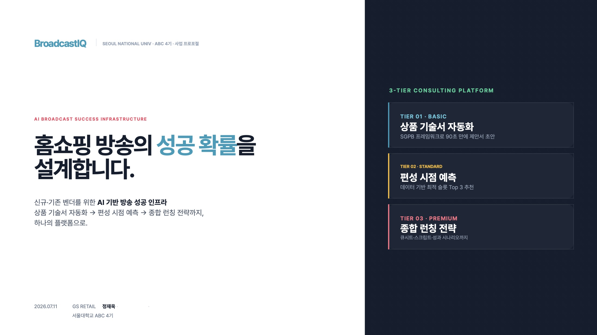

홈쇼핑에서 방송 한 번을 하려면 광고비, 제작비, 재고 준비에 1억 원 이상이 들고, 승부는 단 60분 만에 끝난다. 그런데 어떤 상품을 몇 시에 방송할지는 아직도 대부분 경험과 감으로 정한다. 그 위험 부담은 자금력이 약한 중소 납품업체(벤더)가 떠안는다. 방송이 끝나고 나오는 분석도 "오늘 날씨 때문에", "축구 중계 때문에" 수준이다.
25년간 PD와 MD로 일해 온 발표자는 BroadcastIQ라는 AI 플랫폼을 설계했다. 핵심은 두 가지 실증이다. 첫째, 상품 정보 딱 5줄만 입력하면 90초 만에 방송 제안서 초안이 나온다. 회사 PD들이 오래 써 온 내부 노하우 틀(SGPB: 상황·목표·문제·혜택)을 AI에 옮긴 것으로, 원래는 외주 작가에게 건당 500만 원을 주던 일이다. 둘째, 회사에 쌓인 11년 치 편성 데이터를 AI에 학습시켜, 요일과 시간대별 성공 확률 지도를 그리고 가장 좋은 방송 시간 후보 3개를 예상 매출과 함께 추천하는 시제품을 만들었다.
제안서 작성 시간 90% 단축, 외주 비용 70% 절감, 첫 방송 성공률 10%p 향상이 목표다. 납품업체가 "데이터를 보니 이 시간이 더 좋던데요"라고 협상할 수 있게 되는 것, 즉 큰 회사와 작은 회사의 상생이 이 구상의 진짜 목적이다.